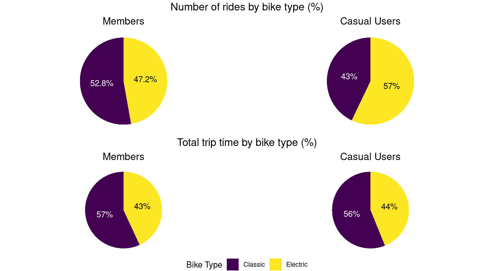

Established in 2016, Cyclistic is a bike-share offering service located in Chicago, USA. Cyclistic currently offers more than 5,800 bicycles that are geo-tracked and locked into a network of over 690 stations across Chicago. The bikes can be unlocked from one station and returned to another station in the system anytime.
Cyclistic offers 3 pricing plans, single-ride passes, full-day passes and annual memberships. Customer who purcharse single-ride passes or full-day passes are referred to as casual users. Customers who purchase annual membership are members
The Cyclistic team have recently concluded that annual memberships
are more profitable than casual riders. Furthermore, the team have noted
that while 30% of users use the bikes for their work commute, the
majority of Cyclistic users ride for leisure. This report will assess
how Cyclistic annual members and casual riders use bikes differently.
Cyclistic releases data on a monthly basis in csv format, for the purpose of this analysis data from October 2021 to September 2022 it’s being used. Due to privacy issues there is no data related to the users (like past purchases or location).
Each dataset contains between 100,000-830,000 rows. Due to the size of the data R and RStudio were used to process and analyze it.
The datasets were imported to R and merged into one big dataframe
consisting of more than 5.8 million rows. Some columns were added to
allow aggregation by month, day, day of week, hour and ride length. The
data was then cleaned by removing negative ride lengths and ride lengths
below 60 seconds. All entries for docked bikes were also removed, since
this analysis is focused on differences between members and casual
users, and it seems members are treated as casual users when using
docked bikes.
Note : Since the data used in this analysis represent just one year, we can’t accurately look for yearly trends. This section of the analysis is only valid as far as data from several previous years are similar.
User rides are higher than casual rides in any month. The worst months of the year for Cyclistic are January and February. The most popular time of year are the summer months where the number of rides reaches more than 15 times and more than 5 times the number of rides in January for casual user and members respectively. This highlights Cyclistic’s team findings that the most part of users ride for leisure.
There seems to be a lot of seasonality for both type of users but still members use the service more consistently throughout the year. Also, while casual rides went down on August, member rides continued rising until September.
Members and casual users make 61% and 39% of the rides respectively. The number of rides for members goes down on weekends (but its still higher than for casual users), while the number of rides for casual goes up a lot. That suggest that while members also use the service for leisure, a lot of them use it mainly for their daily mobility needs like commute to work. Casual users use it mostly for leisure.
The average ride duration is always higher for casual riders, this also shows that casual riders are using the service for leisure much more than members
Between Monday and Friday there are two spikes in the number of rides for members, one at 07:00-08:00 where people go to work and a bigger one between 16:00-18:00 (being at its highest at 17:00), where people get out of work. That confirms that members use the service a lot for their daily mobility needs. For casual users the number of rides is much lower and it goes up slowly during the day, with its highest value at 17:00.
On weekends the number of rides per hour are pretty much the same for members and casual users.
Looking at the average duration of rides by hour, the lowest value for casual riders is higher than the highest value for members.
The number of rides for casual riders has a lot more variance, having the highest and the lowest values in the year.
In general there are more member than casual rides, but there are some days (mainly between May and August) where this is not the case.

Members use more classic bikes (52.8% of their rides) than electric bikes. casual users use more electric bikes (57% of their rides) than classic bikes.
The average duration of rides in electric bikes it’s 714 for members and 1031 for casual riders. The average duration in classic bikes is 842 for members and 1756 for casual riders. This shows that, on average, the time people spend on a ride increases when using classic bikes. What’s interesting its that this increase in duration is much more pronounced for casual riders with a 70% increase vs 18% for members.
This result in both type of riders having almost the same proportions of their total ride time by bike type, despite casual users making less rides in classic bikes.
Despite Cyclistic having stations covering a wide area of Chicago,
most popular stations are concentrated close to the shoreline.
Cyclistic’s most popular station is by far Streeter Dr & Grand Ave
with 62237 rides, 65% more than the second most popular station. The
least popular stations are at the south and west, with a lot of stations
having less than 10 rides (Although it’s worth noting that a lot of
these stations seem to be relatively new, judging by the date of the
first ride recorded in the time period analyzed). This also reflects the
fact that most Cyclistic users ride for leisure.
The most relevant difference on how members and casual riders use Cyclistic bikes differently seems to be that members use it a lot for their everyday life while casual riders don’t.
Offering a discount will encourage more people, mainly those who already use Cyclistic, to buy an annual membership. If they end up using the service for their daily activities like a lot of members do, then they’re likely to keep paying for the subscription and if they don’t use the service for their daily activities they will most likely use the service less than the average for members, so they will not be less profitable for Cyclistic than other members despite the discount.
A marketing campaign highligthing on how Cyclistic is integrated in the daily life of a lot of Chicago locals, showing what benefits they get from it (e.g. skipping traffic, doing exercise, the convenience of having stations in all the city, etc) and how others could also benefit from integrating Cyclistic in their life over only using it sometimes for leisure. Also highligthing how casual riders who already use the service a lot can benefit in terms of price.
By conducting polls on customers Cyclistic could gain more insights on what its customers think about Cyclistic, what do they like most about it?, what, if anything,they don’t like?, how much they use the service and for which purposes?, why don’t casual users buy a membership?, what would make them more likely to become members?. For instance maybe some users would buy a 6 month membership but not an annual membership, Cyclistic financial team could analyze, taking seasonality into account if that would be profitable at what price should it be. Maybe some important amount of casual users are tourist and Cyclistic wants to take that into account since they can’t convert tourist to annual members.
Analyze data from previous years to see if yearly trends found in the analysis are consistent. That, with some other data could like the number of tourist, could be used to make decisions, like doing most marketing campaigns in the summer months where the number of casual riders is much higher.